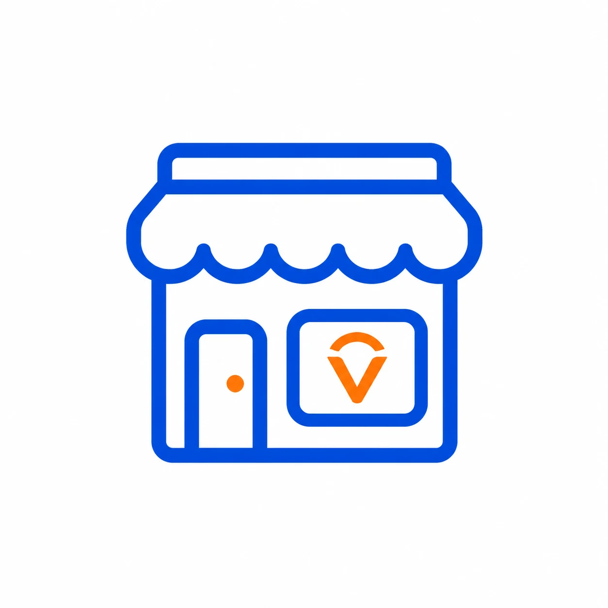
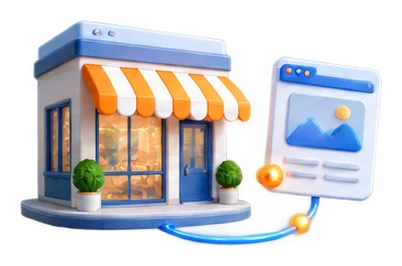
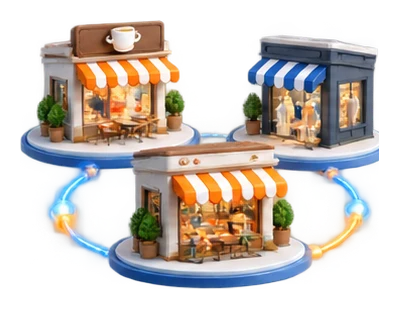
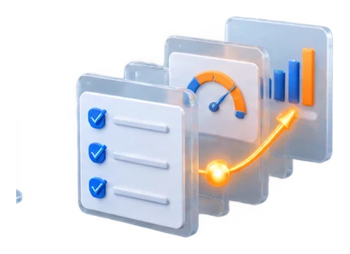
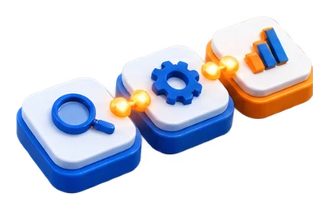

01 · InformaciónAzul
Azul profundo
Navegación y superficies de información.
Bisel fríoTransparencia media
Material · luz · profundidad
Un mismo material cristalino, seis tonos y componentes funcionales construidos por separado. La luz acompaña la lectura; el volumen se siente en cada superficie.

Identidad oficialVico · activo verificadoLa forma conserva el volumen.
El color expresa la intención.
El contenido mantiene el control.
01 / Sistema de superficies
Espesor, bisel, transparencia, refracción y sombra siguen una sola regla. Cada acabado mantiene esa geometría y cambia solo la luz y el tono.
Navegación y superficies de información.
Lectura, formularios y superficies claras.
Acciones principales y acentos de Vecidya.
Avisos y elementos que requieren atención.
Éxito, confirmación y validación.
Error, riesgo y acciones destructivas.
La materia no depende del tono. El borde refracta la luz, el canto inferior aporta espesor y la sombra fija cada superficie al plano.
02 / Componentes en uso
Botones, paneles y pestañas son controles reales: reciben foco, cambian de estado y mantienen el contenido por encima del efecto.
Acciones
El bisel ilumina el borde; el estado y el nombre siguen legibles sin depender del color.
Contenido
Nombre, categoría y estado se ordenan sobre el cristal.
Navegación local
Una capa de apoyo mantiene el material separado de los datos.
Los cambios se distinguen por fecha y estado, sin usar el color como única señal.
La superficie conserva borde, reflejo y elevación en todas sus variantes.
Jerarquía y elevación
El valor pertenece a una muestra visual; no representa datos de la plataforma.
Contenido progresivo
En navegación y acciones. Formularios, tablas y textos largos usan vidrio más sobrio para conservar contraste.
El control nativo abre y cierra sin dependencias ni JavaScript adicional.
03 / Entrada de datos
Los controles reciben una capa de vidrio más sobria, con etiquetas visibles, foco claro y validación local.
Estados de campo
Contraste antes que destello. En zonas densas, la translucidez baja y el texto toma el primer plano.
04 / Datos y estados
La misma estructura funciona para tablas, métricas y mensajes. Cada estado combina tono, etiqueta y contexto.
Tabla de referencia
| Tono | Uso previsto | Texto | Estado |
|---|---|---|---|
| Azul profundo | Navegación e información | Claro | Disponible |
| Blanco hielo | Lectura y formularios | Oscuro | Disponible |
| Naranja solar | Acción y énfasis | Oscuro | En revisión |
| Verde claro | Confirmación | Claro | Disponible |
Feedback
05 / Biblioteca visual
Fondos, marca, iconos, ilustraciones, guías y catálogo usan las mismas superficies Crystal. La identidad de cada imagen se mantiene como archivo separado.
No hay activos con ese término. Prueba con “diagnóstico”, “servicio” o “interfaz”.
Inventario completo de public/assets/, con fuentes originales separadas. Once iconos tienen una vista Crystal PNG propuesta; los originales permanecen intactos.
06 / Escenas ambientales
Los fondos definen el ambiente; las ilustraciones oficiales aportan contexto; las tarjetas reales se componen encima, a su escala.

La luz guía el foco y deja aire para el contenido real.

Las rutas de luz vinculan negocios sin ocultar su contenido.

El vidrio baja de intensidad cuando aumentan los datos.

La jerarquía separa contexto, estructura y acción.
Estado de la iteración. La biblioteca es local y de revisión visual. No migra estilos, rutas, formularios ni diagnósticos de la plataforma.